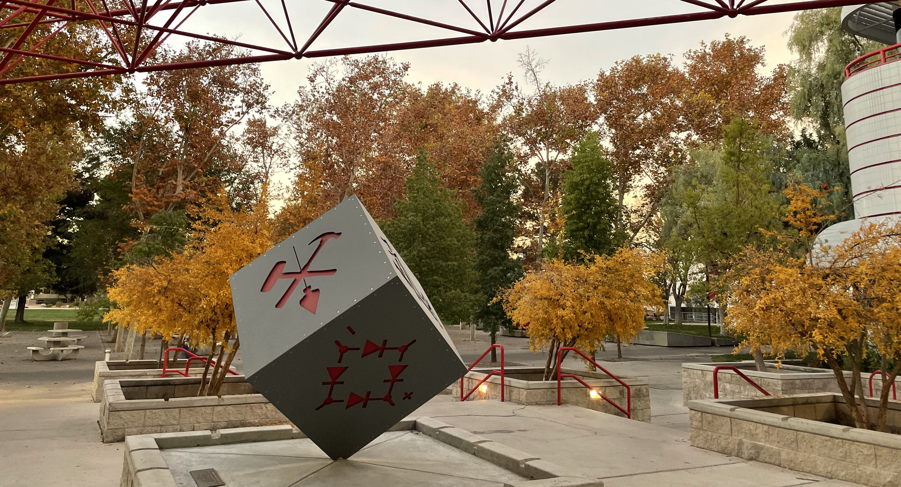

Engineer. Builder. Problem Solver.
I work on GPU physical design methodology at Intel, focused on power delivery, signoff, and building AI into the flow.
Custom power switch insertion to close IR drop on gated partitions, always-on cell power delivery redesign for a deep sub-micron node, and a feedthrough port optimization flow for multi-voltage partition crossings. Also cut runtime on parts of the signoff flow from hours to minutes by parallelizing file parsing and reordering execution.
A research team needed a way to collect and analyze study data, and I was the only engineer around, so I built it. GUI plugin, database, analytics pipeline. Ended up co-authoring the paper in the Journal of Medical Education and Curricular Development and presenting at the AAMC Western Group conference.
Read Paper →Senior capstone project: an autonomous rescue robot that used computer vision and AI to find people and clear debris in disaster scenarios. Hardware, software, and a lot of real-world constraints. It got picked up by the local NBC affiliate.
Watch Story →Hundreds of GPU partitions across five programs and over a hundred engineers, with no unified way to track design quality. I built a QoR dashboard system that gave the team week-over-week visibility across all of them. It became how we made design decisions.
Built and shipped an iOS word puzzle game. You roll letter dice and build a crossword from what you get. Designed, developed, and published it myself. Paper and visualizer for the underlying algorithm are in the works.
Download on the App Store →There's a lot of automation in the chip design pipeline already, but there are still gaps where engineers spend time on repetitive decisions. I'm working on an AI agent framework that takes a design spec and drives it through RTL-to-GDS, closing some of those gaps. Still early, but it's the direction things are going.
Before Intel I did a bit of everything. Tutored math, built microprocessors and rescue robots in undergrad, wrote firmware for gaming machines, worked on flight software for a CubeSat, and somehow ended up co-authoring a medical research paper. I tend to pick up whatever the project needs.
These days most of my time goes to power delivery methodology and signoff for Intel's GPU programs, three tapeouts so far across client and datacenter. I've been spending more of it on automation lately, building AI agent frameworks that push designs through physical implementation with less manual work.
Columbia MSEE, UNLV BS CpE. I like understanding how things work end to end, and I'm at my best when I can build something that makes a process better.